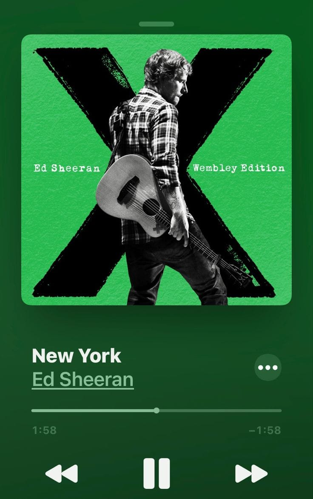

I chose this song because it was the first song I ever sang in my English course, about 10 years ago.
I already loved Sheeran back then, but this song means so much more to me now. Whenever I hear it, it takes me back to that classroom, the teachers, the people, and that special time in my life.
It’s amazing how a song can hold so many feelings and memories. As soon as it starts playing, it feels like I’m back there again, even if just for a few minutes.
I really miss those days.
Good times, good people, and memories that I’ll carry with me forever.